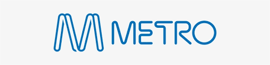

Who are metro trains?
Metro Trains Melbourne (MTM), commonly referred to as Metro, is the operator of Melbourne's metropolitan rail network. Since November 30, 2009, MTM has managed the city's electrified suburban rail services under a franchise agreement with the Victorian Government. The network comprises 17 lines, 222 stations, and approximately 998 kilometers of track, making it Australia's largest urban rail system. MTM is a joint venture between UGL, Hong Kong's MTR Corporation, and John Holland. The company employs over 7,000 staff across various roles, including train drivers, signallers, station staff, and corporate personnel. Notably, MTM boasts one of the world's largest groups of female train drivers. The network serves as a vital component of Melbourne's public transport system, facilitating daily commutes across the city and its suburbs. MTM operates more than 60,000 train services each month, transporting over 450,000 passengers daily. In addition to daily operations, MTM is involved in significant infrastructure projects, such as the Metro Tunnel, which aims to increase network capacity and provide a more efficient service.
Their official website is https://www.metrotrains.com.au/
Their contacts are:
Phone:
1800 800 007
Email: enquiries@ptovic.com.au

When did they start?
Metro Trains Melbourne (MTM) commenced operations on 30 November 2009, taking over the management of Melbourne's metropolitan rail network from the previous operator, Connex. This transition marked the beginning of a new franchise agreement with the Victorian Government, under which MTM has been responsible for operating and maintaining the city's electrified suburban rail services. As of 2024, Metro Trains Melbourne celebrated 15 years of service, reflecting on its contributions to the city's transit infrastructure and its ongoing commitment to providing reliable rail services to the residents of Melbourne.
What fleet do they use?
Metro Trains Melbourne currently uses 5 types of Electrical multiple unit (EMU), half built in and refurbished in melbourne, the other half ordered from europe. In addition to these electric trains, Metro Trains Melbourne also operates diesel-powered Sprinter trains on non-electrified lines, such as the Stony Point line. The fleet is maintained at various facilities across Melbourne, including the upgraded Craigieburn Train Maintenance Facility, which will house the new X’Trapolis 2.0 trains
Metro trains fleet is a website made in a VET class, not official.